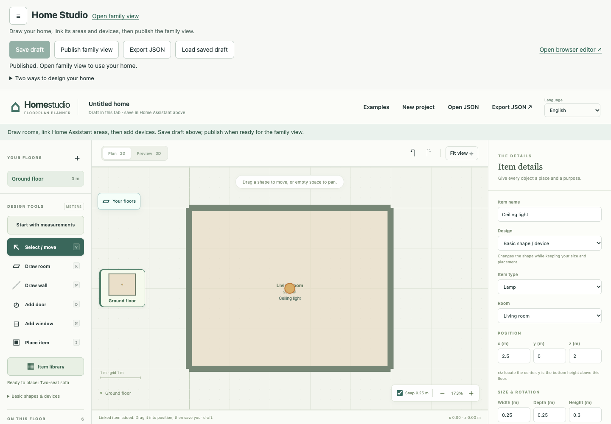

GET STARTED · INSTALL IN HOME ASSISTANT
Your 3D home.
Built inside Home Assistant.
Install Home Studio, draw one room, save it, and publish it. Add furniture and device controls when you are ready.
Home Studio in the HA sidebar is the administrator's drawing editor. 3D Home is the published view your household uses for everyday controls.
You need Home Assistant 2026.10 or newer, an administrator account, and a HA backup. HACS is the recommended installation route; manual ZIP installation is available too.
A new native installation needs no terminal build, Python setup, YAML entry, or pasted access token. Editing and publishing later do not require a reinstall or restart.
01 · RECOMMENDED INSTALLATION
Install Home Studio in Home Assistant
- Make a Home Assistant backup. Sign in with an administrator account and check that HA is 2026.10 or newer.
- Open HACS, select the three-dot menu, then Custom repositories. Enter
https://github.com/ha-homelab/home-studio, select the Integration type, and choose Add. - Find Home Studio in HACS and download the latest stable release. Restart Home Assistant after the installation finishes.
- Open Settings → Devices & services → Add integration and choose Home Studio.
- Open Home Studio in the HA sidebar. This is where you draw, save drafts, and publish.
If HACS is not installed, follow its official setup guide or use the manual route below. The HACS custom-repository guide illustrates its menu.
Install manually without HACS
Download home_floorplan.zip from the latest stable release. Extract its contents into config/custom_components/home_floorplan on your HA installation; create the folders if needed. manifest.json must sit directly inside home_floorplan. Restart HA and continue from step 4.
Use the integration ZIP, not home-studio-VERSION.zip or GitHub's Source code ZIP. Keep one installed copy of the integration. Ordinary drawing changes are published from the editor, not installed by copying files again.
No YAML or access token is needed for this route. Home Studio uses your existing HA login. The compiler commands and YAML example farther down this page apply only to the optional portable toolkit.
02 · DRAW, SAVE, AND PUBLISH
Make your first working room
- In Home Studio, choose Add your first room and enter its name and dimensions. This shortcut includes walls. The first-room steps give a simple example.
- Check the floor and walls in Preview 3D. You can add doors, windows, furniture, and devices later.
- Choose Save draft and wait for confirmation. Then choose Publish to 3D Home and wait for publication to finish. Choose Open 3D Home to see the room.
- Return to Home Studio to add detail. When you link a real HA device, save and publish again, then use Dry run in 3D Home to check its controls without sending commands. Turn Dry run off when you want live controls.

Save draft keeps your work for editing. Publish to 3D Home updates what your household sees in 3D Home. An unfinished draft or failed publication does not replace the last working view. The editor and publication require an administrator; household members use the published view with their HA permissions. Follow the illustrated drawing guide to add a second room, a door, a window, and furniture.
For backups, keep HA backups and use More options → Export drawing (JSON). Update the integration through HACS or its manual package route, and restart when required. Your saved native project and published assets are stored separately from integration code. Read the full native editor guide for recovery and updates.
03 · IF SETUP GETS STUCK
Check these before changing your workflow
Home Studio is missing from HACS or Add integration
Add the repository with type Integration, download the stable version, and restart HA. For a manual installation, check that custom_components/home_floorplan/manifest.json exists. Confirm HA is 2026.10 or newer, then refresh the browser.
I can see the plan, but not the editor
Sign in as an administrator and open Home Studio, not just 3D Home. With the complete editor/runtime, a generated home opens its current rooms and objects in Home Studio. Original architecture is protected while placements, bindings and additions are editable. Use Edit home in the 3D Home header to return. Older thin packages need the complete runtime; retain private adapters when updating.
The editor does not finish loading or Publish fails
Use Retry connection after a short wait if it is offered. Use More options → Export drawing (JSON) before closing an unsaved draft. Publication needs valid geometry and at least one room per floor; correct the named field and publish again. The last successful view remains available.
Still blocked? Use the optional editor below to keep drawing while you resolve setup. A bug report should include your HA and Home Studio versions, browser, and a fictional reproduction.
01 · KEEP YOUR EDITABLE SOURCE
Export your drawing
- Open Home studio. Draw your rooms and walls, add openings, and check each floor in Preview 3D.
- Choose Build & install and review any validation message. You can export an unfinished draft, but the compiler needs a valid project.
- Choose Export project.json. Move the downloaded file to a private folder you can find again.
Keep this JSON file when you build or install. It is the editable source for future geometry changes. Entity IDs can stay blank until you link devices inside Home Assistant.

02 · A COMPLETE LOCAL TOOLKIT
Download and open the toolkit
- Open the latest stable release. Under Assets, download
home-studio-VERSION.zip, where VERSION is the release number. Choose this packaged toolkit, not GitHub's Source code ZIP. Extract it and open the resultinghome-studiofolder. - Open a terminal in that folder. You should see
scripts,planner, andcustom_componentsalongsideREADME.md. - Run
python3 --version. If needed, install Python 3.10 or newer from python.org. The compiler and installer use the standard library; nopip installstep is needed.
On Windows, your command may be py -3; use that wherever this guide says python3. Replace example paths with real paths on your computer, and put quotes around a path containing spaces. A downloaded website page by itself is not the complete toolkit.
The release includes a matching .sha256 file for checking the download. Beta and release-candidate packages are previews; the link above selects the stable release.
03 · MAKE YOUR VIEWER AND PACKAGE
Build, then take a look
From the toolkit folder, run this command with the path to your exported project:
python3 scripts/build-planner-project.py --project /path/to/project.json --output dist/my-home --ha-packageThe compiler writes your viewer and floor exports to dist/my-home, including home-floorplan.tar.gz for Home Assistant. Use an empty output folder or one created by an earlier build. Keep the editable project outside that output folder.
Preview the result with a local web server:
python3 -m http.server 8099 --bind 127.0.0.1 --directory dist/my-homeOpen http://127.0.0.1:8099/, choose a floor, and check its layout. Keep the terminal open while viewing; press Ctrl+C when finished. This preview does not control devices.
04 · CHOOSE YOUR FILE ACCESS
Install into the right config folder
If Python runs on a host with direct access to Home Assistant's config directory, use the local installer below. This is the directory containing configuration.yaml; for a container it is the host directory mounted as /config.
If you use Home Assistant OS and only access HA through a browser or file share, follow the Samba copy route instead. The installer expects a local filesystem path, not an HA address or token.
First, validate without changing files
python3 scripts/install-home-assistant.py dist/my-home/home-floorplan.tar.gz --config /path/to/ha/config --dry-runCheck the printed destination and site name. The config directory must already exist, and its path must not pass through a symlink. A successful dry run creates or changes no files.
Then install
python3 scripts/install-home-assistant.py dist/my-home/home-floorplan.tar.gz --config /path/to/ha/configThe installer places the complete component under custom_components/home_floorplan. It does not edit YAML, restart HA, or change saved placements. Continue to enable the panel.
Home Assistant OS: validate locally, copy over Samba
- Build on your computer using the steps above. Create an empty folder named
ha-transferinside the toolkit folder. - Validate and unpack through the installer into that local folder:
python3 scripts/install-home-assistant.py dist/my-home/home-floorplan.tar.gz --config ha-transfer --dry-run python3 scripts/install-home-assistant.py dist/my-home/home-floorplan.tar.gz --config ha-transferThis prepares files for transfer; it has not installed anything on your HA machine.
- Use the official Samba share instructions to open HA's
configshare in your computer's file manager. Use your own share credentials there. - Before replacing an existing component, back up HA and stop Core through a console or management connection that can start it again. On the HAOS command line, use
ha core stop. Keep that connection available. - If
config/custom_components/home_floorplanexists, move that entire old folder into a dated folder underconfig/.home-studio-backups. Keep the backup outsidecustom_components. - Copy the complete
ha-transfer/custom_components/home_floorplanfolder toconfig/custom_components/home_floorplanon the share. Createcustom_componentsif needed. Do not merge new files into the old component; wait for the entire copy to finish.
Leave .storage and unrelated components alone. If a copy fails, remove the incomplete new component and put the retained old folder back before starting Core. File-manager transfers do not have the local installer's automatic rollback.
05 · ONE YAML ENTRY
Enable 3D Home
Open your HA configuration.yaml. Add this entry at the top level, with no spaces before its name:
home_floorplan: {}If home_floorplan: already exists, keep that entry and merge any changes there; do not add a second key. Check the configuration before starting or restarting Core. HAOS provides ha core check; a running HA also has a YAML configuration check in its tools. See the official configuration-check instructions.
After a successful check, start Core if you stopped it, or restart it if it is running. On the HAOS command line use ha core start or ha core restart, respectively. Other installations use their normal host or container controls.
Sign in to Home Assistant with an administrator account, refresh the browser, and open 3D Home in the sidebar. The panel uses your existing HA login.
06 · CONNECT YOUR OWN ENTITIES
Make the plan respond to your home
- In 3D Home, choose Edit layout, then Plan & placement.
- Select or place an item and set its Home Assistant entity_id to an actual entity from your HA installation. Use the suggested entities where available.
- Wait for Saved in Home Assistant before leaving the panel. These saved placements belong to HA, separately from the hosted editor's browser draft.
- Return to Home view. Check a known light or switch with an intentional click and confirm its state in HA.
Entity IDs entered in the browser editor become initial mappings; the editor itself never controls those devices. Missing or unavailable entities remain disabled. The generic panel supports its documented entity controls; placing a TV or sensor does not activate specialized TV capture, camera, or RF sensing adapters.
Portable-toolkit troubleshooting
Python or a script cannot be found
Check the Python version and your terminal's current folder. Run the commands from the extracted toolkit folder that contains scripts. On Windows, try py -3 --version. The browser cannot run the Python commands.
The compiler rejects my project or output folder
Read the field named in the error and correct it in the editor. Export again. An unrelated nonempty output directory is protected; choose a new empty output path. Do not put the source JSON inside the replaceable output folder.
The installer rejects a path or archive
Use the actual config directory, with no symlink in its path. Rebuild the archive from the toolkit instead of manually editing it. The installer refuses unsafe paths, links, duplicate members, incomplete assets, and oversized packages. Use --replace only for an intentional update; use the Samba route if direct local access is unavailable.
I do not see 3D Home, or an entity will not respond
Confirm the folder is exactly custom_components/home_floorplan, check the YAML entry, and check HA logs for home_floorplan. Restart after a successful configuration check and sign in as an administrator. For device controls, verify the entity ID and availability in HA, then wait for the layout to save.